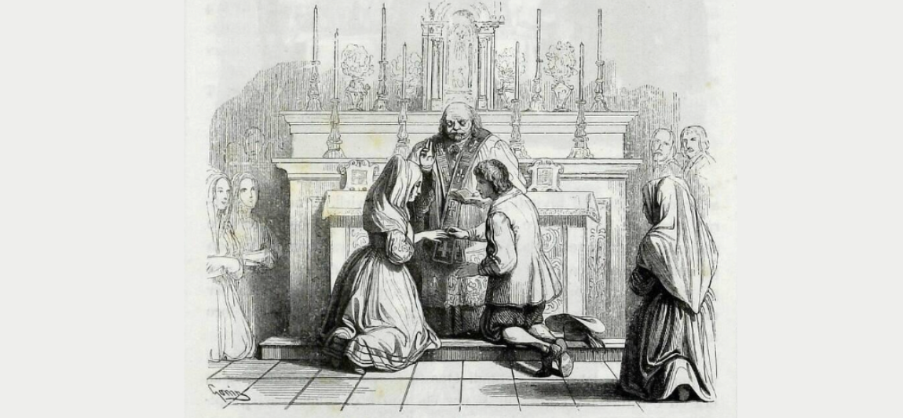
Personaggi
Qui puoi trovare le immagini (illustrazioni di Francesco Gonin presenti nella Quarantana) e le presentazioni dettagliate dei 20 personaggi più noti che compaiono nei primi undici capitoli de I promessi sposi.
Utilizza i pulsanti verdi “Continua a leggere” per visualizzare la presentazione completa di ciascun personaggio e i pulsanti verdi “Indietro” per chiudere il testo e tornare alla griglia dei personaggi.
Scopri le curiosità personali di queste figure, le ragioni che motivano le azioni che compiono e anche da cosa derivano e come si formano le relazioni che intercorrono tra loro nel corso del romanzo.
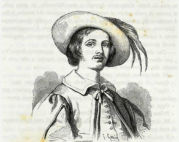
Renzo Tramaglino
Il protagonista maschile. È un umile filatore di seta.
Franco e impulsivo, Renzo porta in sé un innato senso di giustizia. Di fronte all’oppressione o alla violenza, la sua natura pacifica cede a un acceso sdegno, spingendolo verso la vendetta, talvolta fino al limite dell’omicidio. È ingenuo e schietto, ma guidato dal buon senso, spesso diventa facile preda dei furbi e degli opportunisti. Tuttavia, attraverso difficoltà e perdite, impara a proprie spese prudenza e astuzia, sviluppando una morale più pragmatica e autonoma, mitigata e bilanciata dalla ferma fede di Lucia.
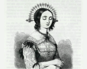
Lucia Mondella
La protagonista femminile e simbolo di virtù e fede.
Timida ma tenace, Lucia è una donna di semplice fede ma con sorprendente finezza di pensiero. Come “promessa sposa” di Renzo, porta i tratti dell’archetipo della “eroina ideale”: pura, virtuosa e costante. Tuttavia, sotto la sua dolcezza e coerenza morale si nasconde una quieta rigidità mentale, attenuata solo dalla saggia guida di Fra Cristoforo. La sua fiducia incrollabile in Dio, la fede come unico scudo, diventa, al termine delle prove e delle tribolazioni del romanzo, l’essenza stessa, il vero “nucleo morale”, dell’intera storia.
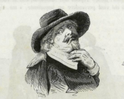
Don Abbondio
Il modesto parroco di campagna che teme le minacce di Don Rodrigo.
Personaggio distintivo e quasi archetipico del romanzo, Don Abbondio è “il vaso di terracotta costretto a viaggiare tra vasi di ferro”. Ogni sua azione è governata da un principio unico e incrollabile: la paura. Essa plasma il suo comportamento, modella la sua morale e resta ferma anche quando il mondo intorno a lui cambia. Rimane costante, timido, prudente e immobile fino alla fine della storia. Tuttavia, è attraverso di lui che il romanzo offre molti intermezzi comici: nei vivaci scambi con i suoi antagonisti, da Perpetua ad Agnese, e nelle osservazioni ironiche del narratore che mettono in luce sia la sua debolezza sia la sua umanità.
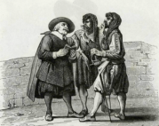
I due bravi
Due scagnozzi al servizio di Don Rodrigo.
Armati e violenti, i Bravi servono Don Rodrigo e hanno origini storiche tra il XVI e il XVII secolo. Il loro nome deriva dal latino pravus, cioè “malvagio”. Minacciosi e appariscenti, portano barbe incolte, cappelli calati sugli occhi, numerose armi e ornamenti vistosi. Il loro compito è impedire il matrimonio tra Renzo e Lucia, minacciando Don Abbondio con un misto di rispetto e intimidazione, costringendolo a obbedire agli ordini di Don Rodrigo. Simbolicamente, i Bravi incarnano l’abuso di potere e la violenza che i ricchi e potenti esercitano sui più deboli.
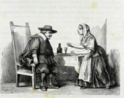
Perpetua
La governante leale e schietta di Don Abbondio.
Energica, pettegola e loquace, Perpetua spesso si confida con Don Abbondio, pur nutrendo per lui un profondo affetto. La sua personalità vivace e combattiva riflette la sua natura diretta e popolare. Nonostante le frequenti discussioni, resta la domestica più fidata e consigliera del parroco, anche se lui, consapevole della sua propensione ai pettegolezzi, esita spesso a confidarsi, anche quando ha bisogno di sfogarsi. È lei a spronare Renzo a scoprire la verità sul matrimonio ostacolato e in seguito consiglia a Don Abbondio di rivolgersi all’arcivescovo Borromeo. Il suo destino termina tragicamente con la morte durante la peste.
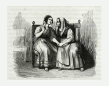
Agnese
La madre saggia e pratica di Lucia.
Più astuta e pragmatica di qualsiasi altra donna del villaggio, ma infinitamente premurosa verso la figlia, Agnese porta vivacità in ogni scena in cui appare. È lei a ideare il piano per il matrimonio segreto, a consigliare Don Abbondio e Perpetua di rifugiarsi nel castello dell’Innominato durante il passaggio dei lanzichenecchi, e a trovare sempre le parole giuste quando altri tacciono per paura o timidezza. La sua arguzia e saggezza concreta offrono uno spaccato vivido del mondo istintivo e vitale della gente comune.
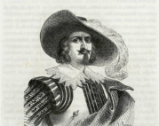
Don Rodrigo
Un signorotto crudele e prepotente, segnato tanto dall’arroganza e dalla malvagità quanto dalla mediocrità e dalla codardia.
Spinto da un capriccio libertino e da una scommessa imprudente, incarna i tratti stereotipici di un signore locale: potente ma meschino, guidato dall’orgoglio di casta e superstizioso. La sua forza è più apparente che reale, mascherata dietro una scorta di bravi, nascondendo una debolezza che talvolta si manifesta come lampi di coscienza morale. L’incontro con Fra Cristoforo lo colpisce come presagio sinistro, sia nei sogni profetici sia nella certezza del tradimento di Griso, che lo conduce a una fine ignominiosa: sul carro dei portatori di peste.
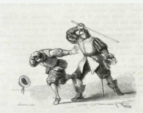
Conte Attilio
Cugino di Don Rodrigo, che incoraggia le sue malefatte.
Astuto e scaltro, Attilio è molto più intelligente di Don Rodrigo e maestro nel manipolare gli altri per i propri fini. Cinico e spietato, agisce senza coscienza morale, indifferente alle conseguenze delle sue azioni; la sua crudeltà è pura e incondizionata. Orgoglioso e aristocratico, mostra un forte senso di superiorità di classe ed è facilmente offeso se il suo onore è minacciato. Giovanile e apparentemente giocoso, appare insieme crudele e spietato. Incita Don Rodrigo, soprattutto riguardo a Lucia, e origina la scommessa che, inizialmente uno scherzo, lo rende complice attivo dei malvagi piani del cugino. Muore anch’egli di peste, punito dalla Provvidenza Divina.
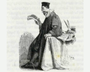
Azzecca-garbugli
L’avvocato codardo che rifiuta di aiutare Renzo contro Don Rodrigo.
Alto, magro, calvo e con il naso rosso, Azzecca-garbugli sembra un avvocato disponibile ma è profondamente corrotto e servile. All’inizio accoglie Renzo, credendolo un bravo al servizio di un signore locale, e offre assistenza per aggirare la legge. Quando scopre che Renzo è la vittima e Don Rodrigo l’aggressore, cambia atteggiamento: lo accusa di mentire e lo allontana con disprezzo. Sceglie di schierarsi con il potente Don Rodrigo anziché difendere il debole, diventandone complice. La sua filosofia, riassunta nella frase “Se sai come maneggiare bene gli editti, nessuno è colpevole e nessuno è innocente”, riflette l’uso strumentale della legge da parte dei potenti e l’ipocrisia di un sistema giudiziario che protegge i ricchi a spese degli umili.
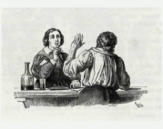
Tonio
Un giovane contadino che aiuta Renzo nel tentativo di un matrimonio segreto con Lucia.
Povero e indebitato con Don Abbondio, Tonio è sposato con una moglie laboriosa e ha molti figli; la sua vita è segnata dalla povertà, simboleggiata dalla polenta di grano saraceno che la famiglia consuma. Allegro, gioviale e di buon cuore, mantiene uno spirito vivace nonostante le difficoltà. Coinvolto da Renzo nel matrimonio a sorpresa con Lucia, accetta in cambio della cancellazione del debito. Presente durante la cerimonia, a differenza del fratello Gervaso, partecipa attivamente. Diventa più consapevole e determinato, risolve il debito e recupera la collana d’oro della moglie.
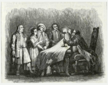
Gervaso
Fratello di Tonio, coinvolto anch’egli nel piano del matrimonio segreto.
Coinvolto da Renzo come testimone nell’evento che fallisce, Gervaso è mentalmente debole, goffo, poco intelligente e facilmente influenzabile. Durante la cerimonia simulata a casa di Don Abbondio si comporta in modo esagerato e caotico, saltando e gridando come se fosse posseduto. La sua ingenuità gli impedisce di mantenere il segreto, rivelando parte di quanto accaduto.
Fra Cristoforo
Un frate cappuccino, simbolo di forza morale e giustizia.
Nobile di nascita, Ludovico, assume il nome del suo servo morto per difenderlo e si converte entrando in convento, diventando Fra Cristoforo. Al cavaliere impulsivo e irascibile, un tempo assassino, il narratore affida il ruolo di incarnare l’ideale cristiano: carità, obbedienza e sacrificio personale. Personalità in conflitto interno tra gli impulsi audaci del passato e le richieste temperate del ruolo religioso, anima ogni momento del suo percorso. La sua voce trasmette autorità ed emozione: dai sermoni a Renzo agli ammonimenti a Don Rodrigo, fino alle parole delicate che liberano Lucia dal voto. Il discorso agli sposi finalmente riuniti al lazzaretto diventa sermone e testamento spirituale.
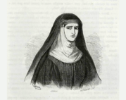
Gertrude (Monaca di Monza)
Una donna tragica e infelice, costretta alla vita conventuale.
Ospita Lucia e Agnese sotto la sua autorità.
Figura drammatica, all’inizio di un secondo romanzo parallelo, Gertrude è esplorata con grande sottigliezza psicologica. Vittima delle ingiustizie sociali e delle costrizioni dell’educazione, è tormentata anche dalla propria debolezza. Diventa strumento passivo dei piani di Egidio e tormento per Lucia, affidandola ai rapitori. Il rimorso finale trasforma il suo destino in condanna: isolamento a vita dal mondo.
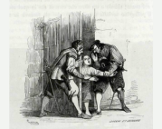
Menico
Un ragazzo inviato da Fra Cristoforo per avvertire urgentemente Renzo e Lucia.
Ingenuo, vivace e allegro, ma anche intelligente e capace, Menico riceve l’incarico di avvertire gli sposi. Intercettato dai Bravi di Don Rodrigo, riesce a sfuggire grazie al suono delle campane, informando Renzo, Lucia e Agnese del pericolo imminente, permettendo loro di fuggire.
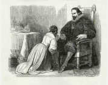
Egidio
Un nobile locale, amante segreto di Gertrude e complice in vari crimini.
Collabora con l’Innominato nell’organizzazione del rapimento di Lucia. Con astuzia convince Gertrude a lasciare il convento, rendendola complice inconsapevole. Figura breve ma oscura, getta un’ombra di peccato e manipolazione sul destino di Gertrude e sull’episodio del rapimento.
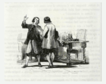
Bortolo
Cugino di Renzo che vive a Bergamo e lo aiuta a trovare rifugio e lavoro.
Accoglie Renzo dopo la fuga da Milano, lavorando come tessitore. Incarnazione dello spirito di emigrazione laboriosa e riscatto sociale attraverso il lavoro, gli offre protezione e stabilità, permettendogli di ricostruire la vita lontano dalle ingiustizie subite.
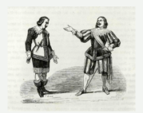
Griso
Scagnozzo di Don Rodrigo, responsabile del rapimento di Lucia.
Esecutore spietato dei piani criminali di Don Rodrigo, tra cui l’organizzazione del rapimento. Privo di scrupoli, incarna brutalità e corruzione. Muore di peste dopo aver approfittato della malattia del padrone.
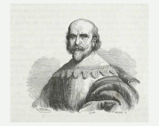
L’Innominato
Temuto signore locale che si converte e libera Lucia.
Grande e insondabile, senza identità registrata, passa dalla disperazione alla grazia di una vita rinnovata dalla fede. Solitario e temibile all’inizio, viene trasformato dall’incontro con Lucia e con il Cardinale Federico, emergendo come “soldato” della fede, guidato da scopo morale e spirituale.
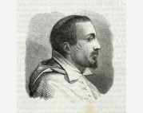
Cardinale Federico Borromeo
Arcivescovo di Milano, figura chiave nella conversione dell’Innominato.
Modello di virtù cristiana, sceglie una vita semplice per servire poveri e malati. Durante la peste si distingue per dedizione e altruismo. La sua figura, storica e idealizzata, simboleggia umiltà, carità e cultura, in contrasto con Don Abbondio. Accoglie il peccatore con compassione, guidandolo alla redenzione.
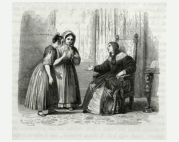
Donna Prassede
La “nobile benefattrice” che accoglie Lucia a Milano.
Simbolo di religiosità rigida e superficiale. Convinta della sua missione morale, agisce per vanità, cercando di correggere gli altri secondo il suo punto di vista, causando sofferenza. Accoglie Lucia per separarla da Renzo e indirizzarla alla vita conventuale, giudicandola severamente. Rappresenta la presunzione mascherata da virtù e il moralismo autoritario privo di vero spirito cristiano.
Dai un'occhiata a Githu
-
Ti è piaciuto questo progetto?
Vuoi vedere come è stato costruito questo sito passo dopo passo?
Esplora il repository del prgetto per approfondire.
Dai un’occhiata veloce al mio profilo GitHub per scoprire altri progetti che ho realizzato.
Mandami
un'e-mail
un'e-mail
-
Sei interessato al progetto?
Vuoi far parte di qualcosa di entusiasmante e aiutare a far crescere questo progetto?
Connettiti con me! Mandami una e-mail qui: alicep2401@gmail.com
Contattami su LinkedIn
-
Vuoi metterti in contatto con me?
Contattami su LinkedIn!
Seguimi su Instagram
-
Dai un’occhiata al mio Instagram per conoscermi meglio!
Alma Mater Studiorum
-
Scopri tutto ciò che Alma Mater Studiorum – Univeristy of Bologna ha da offrire
Attualmente sto frequentando il secondo anno del Corso di Laurea Magistrale / Master biennale in Digital Humanities e Conoscenza Digitale.

Sautech
Group
Group
-
Sautech Group - System Integrator per l'innovazione tecnologica è un noto system integrator che fornisce servizi e applicazioni tecnologicamente avanzati.
Questo progetto è stato sviluppato sotto la guida e la supervisione esperta dei professionisti di Sautech.